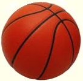

Education
Niagara CollegeSt. Catharine’s, Canada
(09/2019–Present)
(09/2019–Present)
Acting for TV and Film
Brock UniversitySt. Catharine’s, Canada
(09/2015–06/2019)
(09/2015–06/2019)
Recreation and Leisure Studies
Minor in Dramatic Arts
TASIS London, UK
(09/2012 – 06/2015)
(09/2012 – 06/2015)
The American School
Heritage Grammar SchoolLimassol, Cyprus
(09/2008 – 06/2012)
(09/2008 – 06/2012)
Elementary School
Languages: Serbian (native), English (fluent), French (basic)
Interests: Individual and team sports,acting, dramatic arts, coaching and mentoring youngsters, life coaching, motivational work, volunteer work, leadership workshops.

Work experience
Residential Don at Ridley College (09/2017-06/2019), St. Catharine’s, Canada(see reference)
Advising students on personal and academic matters, ensuring that Residence Rules are communicated and upheld, promoting a sense of belonging and facilitating inclusive community development, supporting house team members. Working with the psychologist of Ridley, aiding her in fulfilling respective responsibilities. Assisting Basketball Coach. Assisted and taken part in the Ridley Theatre programme.
Lead Counsellor, Basketball summer program, Ridley College (07/2018-08/2018)
Planning, leading and implementing core and non-core programs and experiences for students in a small group setting. I was responsible for the general safety and development, growth and skill-achievement of the participants in my group. My goal was to provide high quality indoor and outdoor educational and recreational experience for participants, which focus on Ridley’s core values of caring, honesty, respect and responsibility.
Brock Badger Brigadier, St. Catharine’s, Canada (09/2016–04/2017)
Assisting new students around Campus as well as presenting the University to potential newcomers in the best possible light. Greeting campus visitors and reaching above and beyond to ensure guests feel welcome and important, while demonstrating a thorough knowledge and understanding of Brock content and a well-rounded student experience at all recruitment events.
Assistant Coach, MJ Basket PLUS Basketball Club, Limassol, Cyprus (06-07/2014, 06–07/2015, 06–07/2016 and 04–05/2017)(see certificates)
Assisted Mike Jones, the Coach, in both motivating and caring for students, to help achieve a good atmosphere in the club.
Taught students basketball related skills, as well as helped organise drills to aid in student development.
Kept statistics on players to figure out individual strengths and weaknesses, and later organise drills for individual players based on these results, checking later if statistics have improved.
Assistant Coach, TASIS The American International School in England, London, UK (01/2015–06/2015)(see reference)
Assisted in organising middle school pupil participation in after school basketball activities. Showed varying exercises to pupils, which they used to keep in good physical shape.
Vоlunteer еxperience
Recreation City Council Member (01/2019-04/2019)
Helped advertise recreational events around Brock University. Planned a hiking trip, scavenger hunts and study sessions for students. Created mediation classes and physical activities to help promote a balanced lifestyle and good mental health.
Annual Prince of Wales Thorold Holiday Extravaganza, Thorold, Canada (12/2018)(see reference)
Participated in indoor and outdoor activities with different crafts throughout the day, making the events memorable for students and staff.
Tiger fest, Ridley College, Canada (05/2018)
Participated in an annual fundraising event by Ridley College. Helped organise games, supervise children and table stands, sold tickets, set up and cleaned up for the event.
Vinegar Tom Ridley Theatre, St Catharine’s, Canada (09/2017-11/2017)
Aided with the annual theatre play at Ridley by being an acting coach to the students participating in it. It was a fun and enjoyable process to teach acting to children.
Children’s Movement Program, St. Catharine’s, Canada (09/2016–11/2016)(see reference)
Volunteered on Saturdays, worked with Children with disabilities, helping them learn how to enjoy fulfilled lives.
The Heritage Private School, Limassol, Cyprus (05/2016-07/2016 and 05/2017-07/2017)(see references)
Worked as an Assistant Coach for the Heritage Basketball Academy, training the Under-10 and Under-12 teams. Moreover, I worked as a supportive teacher in a variety of subjects and activities, such as Sport, Drama, Music, Art, Crafts and Team Building in The Heritage Summer School.
The Children Shelter, Belgrade, Serbia (02/2015)(see reference)(Spartan race)
Aided with the organisation and management of a fundraising event aimed at raising awareness for at-risk children. In order to do so effectively, I arranged a small theatre production, which resulted in greater engagement by encouraging participation and socialisation. In addition, I organised extracurricular activities (Basketball, English Language) to entertain and educate at-risk children.
Romanian Children’s Relief (RCR), Bistrita, Romania (02/2014)
Assisted in organising extracurricular activities to get disadvantaged children involved in social and physical activities. My role included giving leadership speeches to help inspire and support children living in an orphanage. I took great pride in my ability to connect and raise the confidence of the children I worked with.